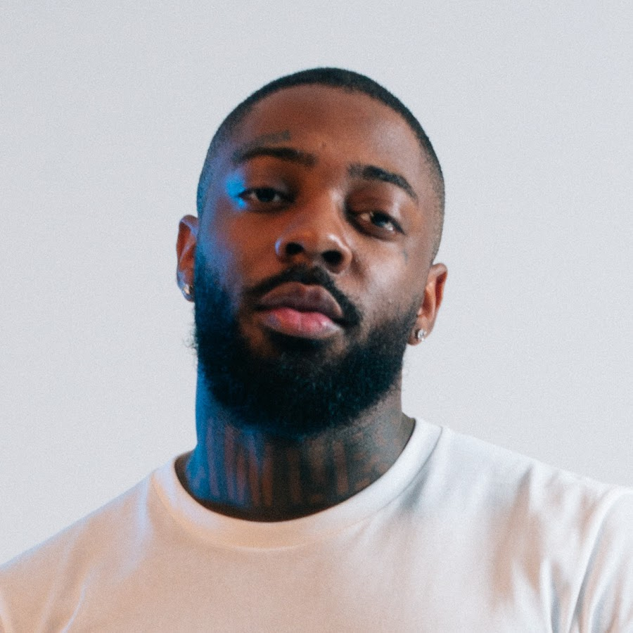

icon
Brent Faiyaz

Brent Faiyaz
Brent Faiyaz (born Christopher Brent Wood) is a Grammy-nominated American R&B singer, songwriter, and producer. Raised in Columbia, Maryland, he rose to global prominence after featuring on GoldLink's 2016 multi-platinum hit "Crew". Renowned for his distinct, sly vocals and fiercely independent approach to the music industry, he has carved out a unique lane in contemporary R&B
Icon is the third studio album by American musician Brent Faiyaz. It was released on February 13, 2026, through ISO Supremacy and UnitedMasters, as the follow-up to his second studio album, Wasteland and his debut mixtape, Larger than Life. Faiyaz had recorded most of the album in 2025. With no guest appearances, the album's production was handled by Faiyaz, Benny Blanco, Chad Hugo, Sonder's Dpat, Paperboy Fabe, Tommy Richman, and Raphael Saadiq, among several other producers. In promotion for the album, Faiyaz released two singles, "Tony Soprano" and "Peter Pan", on July 4, 2025, both of which would make an appearance on the New Zealand Hot Singles chart. On September 18, the album's release was delayed. Icon was supported by one single "Have To", which peaked at number 1 on the Adult R&B Songs chart. Upon release, Icon received generally favorable reviews from music critics.